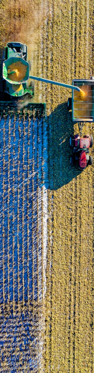

First, we decide which meals will go on our menu. From there, we acquire the necessary ingredients. Next, we verify that cooking utensils and equipment are functioning properly by organizing and sorting inventory.
Here at Végétalienne, we are a farm-to-table restaurant, meaning that the food we serve comes directly from a farm without passing through a store, market, or distributor. Through this concept, farm-to-table can be considered a form of agricultural sustainability, as it helps to preserve the environment and reduces carbon footprint associated with produce transportation. Everyone benefits from farm-to-table: our customers enjoy fresh, high-quality, and natural meals made from farm-provided ingredients; farmers reap the profits from their goods; and our restaurant proudly present these goods to our customers. Farm-to-table represents a direct relationship between a farm and a restaurant.

First, we decide which meals will go on our menu. From there, we acquire the necessary ingredients. Next, we verify that cooking utensils and equipment are functioning properly by organizing and sorting inventory.
Before using the ingredients, we wash and dry them. Then we cut, peel, slice, and mix (if needed) the ingredients. We measure and pre-weigh them for accuracy and consistency. Afterwards, we preheat equipment, assemble dishes, and store foods in their proper containers.
We preheat cooking equipment to the correct temperature before use. We use a food thermometer to check the temperature of foods. Next, we add spices and seasonings, check for doneness, and, finally, plate the dishes.
After cooking, we preserve foods for later use. Then, we pre-sanitize and post-sanitize food contact surfaces, wash and sanitize utensils and equipment, dispose of food waste, and label food products.
We adopt a nose-to-tail attitude, meaning we use every part of the ingredient we are working with.
We invest in water-efficient devices and appliances.
We install motion detectors on our lights.
We offer digital menus and printed receipts (if necessary)
We replace plastic takeout containers with cardboard or recyclable foam.
We use cardboard or bamboo straws instead of plastic ones.
We allow customers to opt out of receiving plastic cutlery and straws with their pickup and delivery orders.
We monitor expiration dates of perishable items and use them following the first-in, first-out method in order to reduce food waste.
To further avoid food waste, we shrink portions if we notice that most customers leave a lot of food on their plates.
We installed low-flow faucets or motion-sensor taps to reduce water consumption.
To reduce water usage, we use water-saving toilets.
info@vegetalienne.com
work@vegetalienne.com
(552) 855-3855
205 E 38th St, New York, NY